Final Fantasy XIV
The greatest comeback in gaming history. An MMORPG rebuilt from ashes into a masterpiece.
Review
Final Fantasy XIV's story is one of gaming's greatest underdog tales. Launched in 2010 to catastrophic reviews, it was rebuilt from scratch and relaunched as A Realm Reborn in 2013 under producer Naoki Yoshida — a complete rebuild that saved the game, Square Enix's finances, and eventually produced one of the most beloved MMORPGs ever made. Today, FFXIV is a phenomenon: a game with a fiercely loyal community, extraordinary storytelling, and an unbroken record of quality expansion releases.
The narrative ambition is what separates FFXIV from every competitor. While most MMORPGs treat story as window dressing between content patches, FFXIV has told an ongoing, fully voiced narrative across more than a decade that rivals single-player RPG writing. The Heavensward expansion is a political tragedy with genuine emotional weight; Shadowbringers is considered by many fans to be among the best JRPG stories ever told; Endwalker delivers a conclusion to a decade-long arc with remarkable emotional intelligence.
The job system allows a single character to play every class in the game, eliminating the need for multiple characters. The duty finder matches players for group content efficiently. Free Trial access — covering the base game and Heavensward expansion at no cost — allows new players hundreds of hours of content before paying. Crafting, gathering, housing, glamour (cosmetic customization), deep gold saucer casino, Triple Triad card games, and an active player-run economy create a world of extraordinary breadth. It is the most human MMO ever made.
Strengths and Limits
- Narrative — especially Shadowbringers and Endwalker — rivals the best single-player RPGs
- One character can play every class without rerolling
- Free Trial covers base game and Heavensward — hundreds of free hours
- Community is famously welcoming and supportive
- Housing, crafting, glamour, and side content offer extraordinary depth
- Naoki Yoshida's active leadership keeps updates high quality
- Hundreds of hours of MSQ to reach current expansion content
- Early ARR main quest (post-2.0 patches) is notorious for fetch-quest pacing
- Monthly subscription on top of expansion purchase
- Endgame content requires specific gear levels that can gate new players
Reader Fit
This review is written around fit: who should play it, what kind of session it rewards, and what friction might make it wrong for another reader. A high grade does not mean every player should buy it immediately. It means the game has a clear identity, a strong reason to exist, and enough craft to justify attention from the right audience.